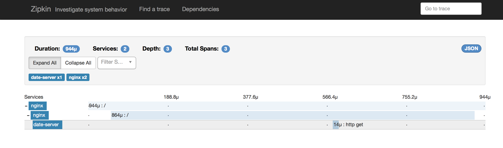
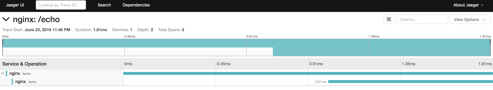

OpenTracing
Enables requests served by NGINX for distributed tracing via The OpenTracing Project.
Using the third party module opentracing-contrib/nginx-opentracing the NGINX ingress controller can configure NGINX to enable OpenTracing instrumentation. By default this feature is disabled.
Usage
To enable the instrumentation we must enable OpenTracing in the configuration ConfigMap:
data:
enable-opentracing: "true"
To enable or disable instrumentation for a single Ingress, use
the enable-opentracing annotation:
kind: Ingress
metadata:
annotations:
nginx.ingress.kubernetes.io/enable-opentracing: "true"
We must also set the host to use when uploading traces:
zipkin-collector-host: zipkin.default.svc.cluster.local
jaeger-collector-host: jaeger-agent.default.svc.cluster.local
datadog-collector-host: datadog-agent.default.svc.cluster.local
NOTE: While the option is called jaeger-collector-host, you will need to point this to a jaeger-agent, and not the jaeger-collector component.
Alternatively, you can set jaeger-endpoint and specify the full endpoint for uploading traces. This will use TCP and should be used for a collector rather than an agent.
Next you will need to deploy a distributed tracing system which uses OpenTracing. Zipkin and Jaeger and Datadog have been tested.
Other optional configuration options:
# specifies the name to use for the server span
opentracing-operation-name
# specifies specifies the name to use for the location span
opentracing-location-operation-name
# specifies the port to use when uploading traces, Default: 9411
zipkin-collector-port
# specifies the service name to use for any traces created, Default: nginx
zipkin-service-name
# specifies sample rate for any traces created, Default: 1.0
zipkin-sample-rate
# specifies the port to use when uploading traces, Default: 6831
jaeger-collector-port
# specifies the endpoint to use when uploading traces to a collector instead of an agent
jaeger-endpoint
# specifies the service name to use for any traces created, Default: nginx
jaeger-service-name
# specifies the traceparent/tracestate propagation format
jaeger-propagation-format
# specifies the sampler to be used when sampling traces.
# The available samplers are: const, probabilistic, ratelimiting, remote, Default: const
jaeger-sampler-type
# specifies the argument to be passed to the sampler constructor, Default: 1
jaeger-sampler-param
# Specifies the custom remote sampler host to be passed to the sampler constructor. Must be a valid URL.
# Default: http://127.0.0.1
jaeger-sampler-host
# Specifies the custom remote sampler port to be passed to the sampler constructor. Must be a number. Default: 5778
jaeger-sampler-port
# Specifies the header name used for passing trace context. Must be a string. Default: uber-trace-id
jaeger-trace-context-header-name
# Specifies the header name used for force sampling. Must be a string. Default: jaeger-debug-id
jaeger-debug-header
# Specifies the header name used to submit baggage if there is no root span. Must be a string. Default: jaeger-baggage
jaeger-baggage-header
# Specifies the header prefix used to propagate baggage. Must be a string. Default: uberctx-
jaeger-tracer-baggage-header-prefix
# specifies the port to use when uploading traces, Default 8126
datadog-collector-port
# specifies the service name to use for any traces created, Default: nginx
datadog-service-name
# specifies the environment this trace belongs to, Default: prod
datadog-environment
# specifies the operation name to use for any traces collected, Default: nginx.handle
datadog-operation-name-override
# Specifies to use client-side sampling for distributed priority sampling and ignore sample rate, Default: true
datadog-priority-sampling
# specifies sample rate for any traces created, Default: 1.0
datadog-sample-rate
All these options (including host) allow environment variables, such as $HOSTNAME or $HOST_IP. In the case of Jaeger, if you have a Jaeger agent running on each machine in your cluster, you can use something like $HOST_IP (which can be 'mounted' with the status.hostIP fieldpath, as described here) to make sure traces will be sent to the local agent.
Examples
The following examples show how to deploy and test different distributed tracing systems. These example can be performed using Minikube.
Zipkin
In the rnburn/zipkin-date-server GitHub repository is an example of a dockerized date service. To install the example and Zipkin collector run:
kubectl create -f https://raw.githubusercontent.com/rnburn/zipkin-date-server/master/kubernetes/zipkin.yaml
kubectl create -f https://raw.githubusercontent.com/rnburn/zipkin-date-server/master/kubernetes/deployment.yaml
Also we need to configure the NGINX controller ConfigMap with the required values:
$ echo '
apiVersion: v1
kind: ConfigMap
data:
enable-opentracing: "true"
zipkin-collector-host: zipkin.default.svc.cluster.local
metadata:
name: ingress-nginx-controller
namespace: kube-system
' | kubectl replace -f -
In the Zipkin interface we can see the details: 
Jaeger
Enable Ingress addon in Minikube:
$ minikube addons enable ingressAdd Minikube IP to /etc/hosts:
$ echo "$(minikube ip) example.com" | sudo tee -a /etc/hostsApply a basic Service and Ingress Resource:
# Create Echoheaders Deployment $ kubectl run echoheaders --image=k8s.gcr.io/echoserver:1.4 --replicas=1 --port=8080 # Expose as a Cluster-IP $ kubectl expose deployment echoheaders --port=80 --target-port=8080 --name=echoheaders-x # Apply the Ingress Resource $ echo ' apiVersion: networking.k8s.io/v1beta1 kind: Ingress metadata: name: echo-ingress spec: rules: - host: example.com http: paths: - backend: serviceName: echoheaders-x servicePort: 80 path: /echo ' | kubectl apply -f -Enable OpenTracing and set the jaeger-collector-host:
$ echo ' apiVersion: v1 kind: ConfigMap data: enable-opentracing: "true" jaeger-collector-host: jaeger-agent.default.svc.cluster.local metadata: name: ingress-nginx-controller namespace: kube-system ' | kubectl replace -f -Apply the Jaeger All-In-One Template:
$ kubectl apply -f https://raw.githubusercontent.com/jaegertracing/jaeger-kubernetes/master/all-in-one/jaeger-all-in-one-template.ymlMake a few requests to the Service:
$ curl example.com/echo -d "meow" CLIENT VALUES: client_address=172.17.0.5 command=POST real path=/echo query=nil request_version=1.1 request_uri=http://example.com:8080/echo SERVER VALUES: server_version=nginx: 1.10.0 - lua: 10001 HEADERS RECEIVED: accept=*/* connection=close content-length=4 content-type=application/x-www-form-urlencoded host=example.com user-agent=curl/7.54.0 x-forwarded-for=192.168.99.1 x-forwarded-host=example.com x-forwarded-port=80 x-forwarded-proto=http x-original-uri=/echo x-real-ip=192.168.99.1 x-scheme=http BODY: meowView the Jaeger UI:
$ minikube service jaeger-query --url http://192.168.99.100:30183In the Jaeger interface we can see the details: 